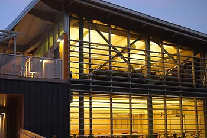
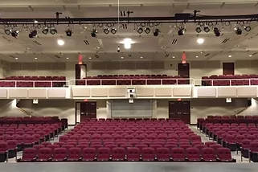
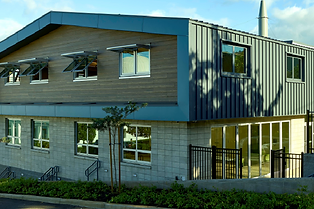
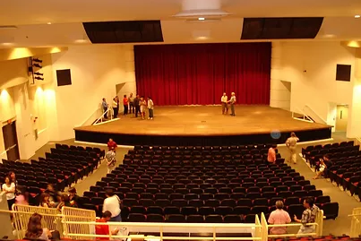
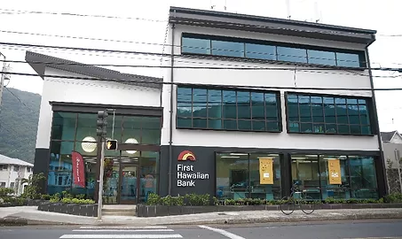
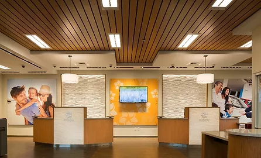
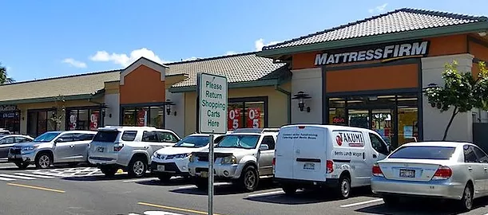
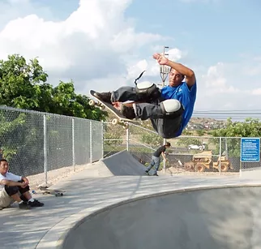
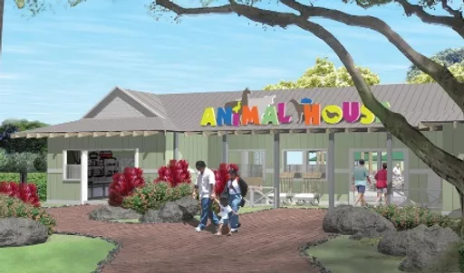

Ralph S. Inouye Co., Ltd.
500 Alakawa Street
Honolulu, HI 96817
P: 808-839-9002
F: 808-833-5971
The project consists of 2 phases: 1) a new 15,200 square feet multi
story high school classroom building, and 2) a renovation and
expansion of the existing library and new senior pavilion. The new
building consolidates science, art, and PE activities. The first level
consists of 4 science laboratories and a prep office. The second level
contains girls and boys locker / shower facilities, athletic support
facilities and a large multi-purpose double classroom. The third level
is dedicated to art with a general art room, digital art room, and
supporting spaces. There also is an outdoor art deck, courtyard, and
elevated walkway and view platform. The library expansion project
totals 8,400 square feet in the existing Fleming Building. The
existing structural members were strengthened, the previous lanai
space was finished with a signature window façade and interior
finishes, HVAC, and lighting. The senior courtyard provides a
gathering space under a shade structure as well as on top on the green
roof. The entire project has been certified LEED—Gold.
During the pre-construction phase, RSI’s team met regularly with the
design team, school staff, and other stakeholders to analyze design
issues, flesh out unique site requirements, and agree on expectations.
Careful coordination helped to expedite permitting, and construction,
and a collaborative effort to provide VE solutions was valuable to
keep the project within budget. A major concern was the effects
construction would have on the busy and congested high school campus.
RSI revised barricade plans, phasing, noisy work, and laydown areas to
minimize the visual and noise nuisance. Construction procedures,
scheduling and phasing plans were developed to minimize impact and
ensure safety and well-being of the students, staff, and visitors.
Additional offsite parking was utilized to minimize impact to the
limited onsite parking.
This project required the complete renovation of the 80-year old
Kawananakoa Middle School Auditorium. The 14,000 square-feet building
now holds a larger concert stage, updated highly technical theatrical
lights & sound, new air-conditioning system, new auditorium seating,
fixtures, windows, finishes, and new vinyl plank siding to mimic the
original redwood siding. The concert hall seats 623 people, and the
new “black box” lab-style theater seats 100. The project includes new
second floor concrete mezzanine, control room, elevator, and scenic
shop. RSI gutted the entire interior of the existing theater including
the existing concrete slab-on-grade leaving the exterior and roofing
intact. Extensive and careful excavation and site work was done within
the existing framing for new structural footings, concrete SOG,
risers, and mezzanine. Careful coordination was needed to rough-in all
of the MEP, AV, and theatrical components.
The Pacific Buddhist Academy (PBA) project consists of a new 2-story,
12,000 SF CMU and steel building along Lusitana Street. This
Design-Build Project took nearly 4 years for the initial concept and
was the combined efforts of the Ralph S. Inouye, RIM Architects, and
PBA. The project was accomplished through consistent communication
between RSI, the architect, client, and affiliated parties, including
the Honpa Hongwanji Hawaii Betsuin Temple and PBA’s partner, Hongwanji
Mission School (HMS).
The building is situated on a steep hill, on which the back of the
building appears to be three stories tall. At the front of the
building is a concrete amphitheater and a garden featuring both native
and introduced species of plants, with landscaping wrapping around the
sides. Master craftsmen were brought in to work on the gold-leafed
Buddhist shrine and the traditional Japanese tea room, which has a
sunken hearth built into the floor. Moreover, tradition and
technological innovation come together in the building’s multipurpose
room. In addition to housing the altar, the room features a foldable
wall, which also functions as a white board, enabling the space to
accommodate the need for classrooms as the school continues to grow.
The room’s surround sound system and advanced lighting system are
intended to be used for PBA performances. The tall glass windows near
the entrance can also be folded to allow easy access to the room from
the outside. For educational purposes, the designers called for an
open ceiling to allow students to observe the inner workings of the
building, while maintaining an aesthetically pleasing look.
To make the most out of the educational opportunity, RSI took on a
student from PBA as an intern. Aspiring to be an engineer, this
experience gave her the chance to attain hands on experience, learn
different aspects of the industry, and gain insight into what it means
to be an engineer. For her, it has been one of the highlights of her
high school experience, and she says she is very grateful for the
chance to see her school being built from the ground up.
The project involved a complete renovation of the 70-year-old
Roosevelt High School Auditorium, reconstructing it up to modern
standards, yet keeping the exterior structure intact due to its
classification as a “historic” building. The new backstage building
extension was added to house dressing rooms, classrooms, restrooms,
and a rehearsal studio. It was constructed to match the existing
finishes and replicates all the original decorative millwork,
mouldings, windows and trims.
The new facility accommodates over 700 guests and is equipped with a
state-of-the art concert shell & acoustical system resulting in an
awe-inspiring experience for performers and audiences alike. The
project won an Award of Excellence in the 2008 GCA Build Hawaii
awards.
"The quality of workmanship and pride in your professionalism shows
through in the finished auditorium. The commitment to the client by
your Project Engineer, Mr. Hasegawa, and Project Foreman, Dino Rola,
was a fine representation of your company's integrity and
dedication."
-An Mahi, Principal of Roosevelt High School
The First Hawaiian Bank, Manoa Branch project consisted of renovating
an existing 3 story building and adding new 2 story wing to house
First Hawaiian Bank’s Manoa branch as well as its leased office space.
The new building consists of a combined reinforced concrete and steel
structure with a metal roof, metal soffit panels and plaster siding.
This new structure was attached to a 3 story existing CMU building,
and the new space encompassed approximately 15,000 square feet. Other
features included a 3 story elevator, 2 on grade parking areas, a 1 ½
story entry curtain wall, and site and building retaining walls.
Interior elements included an open branch space with a suspended wood
ceiling, an ATM room, 2 teller pods, offices, conference rooms,
restrooms, a break room, and a vault.
The project site is nestled in an existing residential neighborhood.
Thus, one of the challenges was demolishing existing homes and a wing
of the existing building before building a new commercial building
that fit within Manoa’s residential community. An additional challenge
was coordinating with 2 mobile carriers to move the existing equipment
housed on the existing building and site and phase the installation of
new equipment while keeping the carriers in service. RSI helped to
complete the project within the client’s budget by assisting in a
significant value engineering exercise at the beginning of the project
and adopting lean construction principles to execute the project on
schedule. As part of the project delivery, RSI performed a 3D laser
scan of the existing building and created a 3D Building Information
Model (BIM). The model was used to perform clash detection sessions
with the design team and subcontractors to coordinate MEP systems
within the tight ceiling spaces before any conflicts arose in the
field.
This project includes the renovation of an aging 2-story, 11,220
square foot building to turn it into the flagship branch of the
Honolulu Federal Credit Union. Ushijima Architects’ use of stone,
wood, and glass gives this “jewel” of Moiliili a fresh and modern
look. The interior design incorporates “teller pods” instead of
traditional teller lines to give credit union members a more personal
banking experience.
Substantial demolition of the existing exterior CMU and concrete
stairwells, second floor walkway, and interior precast concrete tees
and slabs were required and completed safely to install a new elevator
shaft, stairwell, exterior windows, and awnings. Exterior improvements
include new EIFS and porcelain tile cladding, dual glazed windows,
aluminum trellis and sunshades, and silicon roofing. Interior
improvements include all new drywall, acoustical, gyp, and wood slate
ceilings, decorative acoustical wall paneling, solid surface millwork,
glass partition walls and doors, luxury vinyl, carpet, ceramic and
stone floorings, electrical, lighting, communication, fire alarm,
security and AC systems for new restrooms, break room/kitchen, meeting
spaces, vault, and executive offices. A polycarbonate skylight
provides natural light to a central aluminum and glass staircase and
creates a focal point and connection between the 1st and 2nd floors.
RSI and our subcontractor team worked in partnership with the
architect and owner to provide early budget pricing, VE ideas, and
constructability reviews. This helped maintain the project
construction budget.
The Kapolei Village Center sits on 3.94 acres bordered by Kapolei
Parkway, Wakea, Kuou, and Alohikea Streets. At the time of the
project's completion, a 36,000 square foot Foodland Supermarket
anchored the development of an additional 22,000 square feet of
commercial space spread over five additional buildings. RSI worked
diligently with Group 70 International and the owners to provide an
acceptable design as well as a budget to move the project into
construction.
With sudden changes in the economic environment, the entire team
needed to work together to develop an extensive list of
value-engineering ideas to provide the necessary savings to make the
project financial viable while still maintaining the necessary design
elements to gain approval of the City. RSI worked closely with Group
70’s team and provided timely pricing information to create a list of
ideas that fulfilled the overall goal of budget and design.
Under the State’s Emergency Proclamation to build more affordable
housing, Ralph S. Inouye Co., Ltd. (RSI) was selected by the City &
Country to assist Group 70 International (G70) in the conversion of an
existing school into a 42-unit rental complex. The building complex
contains one 2-story building and one 3-story building. In order to
fast track, the project design occurred concurrently with
construction. This project was unique, as input came not only from the
owners, but also the surrounding community. Being so close to
neighboring houses and apartments, any complaints with noise or dust
were addressed immediately.
Construction included a full gut and renovation of the approximately
20,000 square feet of space. Demolition included hazardous material
abatement of some asbestos containing material. One, two, and three
bedroom units were equipped with new electrical, plumbing, and fire
sprinkler system. Interior work included new drywall, painting,
windows, kitchen appliances, shower, and toilet accessories, as well
as a laundry facility and 15 parking stalls, four of which are ADA
compliant. Exterior work included concrete spall repairs, new
guardrails, sun shades, a pedestrian traffic coating, and utilities
feeding the building.
RSI provided G70 with constructability reviews, value engineering
ideas, cost estimating at different stages, and schedule feedback. By
closely monitoring the overall schedule and constantly communicating
with the design team, items that would normally cause delays were
identified early on in the design phase, allowing for the expediting
of long lead items which lead to the project’s on-time completion.
Initial community concerns with the housing ceased once the finished
product was revealed, with no complaints from the users or surrounding
community.
Under the state’s Emergency Proclamation to build more affordable
housing, Ralph S. Inouye was selected by the City & Country to assist
Group 70 International (G70) for the conversion of an existing
abandoned dormitory into a 33-unit dormitory/SRO Housing complex to
address the City’s need for low-income housing. The building complex
contains a one 4-story 9,800SF building adjacent to McCully District
Park. In order to maintain budget and fast track scheduling, RSI
worked with G70 and the City to provide cost estimating, a
constructability review, and VE ideas during pre-construction. RSI
selected MEP subcontractors early on to work in collaboration with the
design team to streamline the design, address long-lead material
procurement, and control cost. Being in close proximity to neighboring
houses and apartments, any complaints with noise or dust were
addressed immediately.
Construction included a complete gut and renovation of the 4-story
9,800 SF building. Demolition included hazardous material abatement
and a complete removal and replacement of the existing roofing system.
Single and multiple occupant style dormitory units were equipped sinks
and refrigerators, as well as a completely new electrical, plumbing,
and fire sprinkler system. A new chairlift was installed on the
exterior to provide access to ADA units on the second floor. Interior
work included new drywall, painting, windows, luxury vinyl plank
flooring, ceiling systems, and doors and hardware. The project also
included laundry facilities, common restroom/showers, common kitchen
and community spaces, offices, and storage. Exterior work included
concrete spall repairs, new guardrails, sun shades, a pedestrian
traffic coating, and utilities feeding the building. Improvements also
included new site fencing, painting, railings, landscape and picnic
spaces, and a decorative mural wall.
The project consisted of a 3.2 acre housing development in Waianae,
Oahu for Housing Solutions, a local developer that provides affordable
housing. 50 units consisting of 2 bedroom and studio apartments, along
with a recreations center, playground area, laundry facility, and
management offices, were constructed. Work consisted of concrete
slab-on-grade, wood framed construction with wood exterior siding and
asphalt shingle roofing. Finishes included, stained concrete floors,
VCT, Carpet, ceramic tile, painting, plastic laminated cabinets, light
fixtures, and doors and vinyl windows.
Housing Solutions utilizes government grants, private donations, and
financing to develop projects. RSI worked with Housing Solutions to
develop workable cashflow schedules, VE solutions, and overall project
management to deliver the development on time and within budget,
exceeding all quality expectations.
The Kapolei Regional Park Skate Facility is a 7,000 square foot park
with three of Hawaii’s first fully enclosed concrete bowls with
Penrose pool coping. The park also consists of approximately 2,000
square feet of “street” element such as grinder blocks, steps, ledges,
and banks.
Ralph S. Inouye Co., Ltd. took a unique approach to this design-build
project by hosting design workshops where the general public and
skating community were invited and participated in shaping the design
of the park. This approach fostered a sense of ownership by all
participants, evident in every weekend in which the park is filled
with skaters of all ages and ability.
"The Kapolei Skatepark is a great example of how to do it right. The
city got a great general contractor [Ralph S. Inouye] who worked
with professional skatepark builders and local skaters to produce to
produce the best skatepark on Oahu."
-Kirk Murakami, Park User
The Animal Encounter Discovery Center at the Honolulu Zoo quadrupled
the size of the Keiki Zoo and has many one-of-a-kind exhibits. The 1.5
acre site was cleared and utility infrastructure was installed. The
project included a unique fiberglass koi tank with a crawl-thru log
and pop-up, interactive water wheel, goat interactive display, guinea
pig display, and goose pond. A new entry building, story-telling
garden, chicken, horse, cow, and llama sheds were designed and
constructed with an old-Hawaiian style theme.
During the pre-construction phase, RSI’s team met regularly with the
design team, zoo staff, and city project managers to analyze design
issues, flesh out unique zoo requirements, and agree on expectations.
Careful coordination helped to expedite permitting and construction
while minimizing change orders and delays. The special needs of the
animals and zoo also were discussed and considered during these team
meetings. Construction procedures, scheduling, and phasing plans were
developed to minimize impact and ensure the safety and well-being of
the animals, staff, and visitors. Zoo staff enjoyed hands-on input
throughout the entire project, which helped RSI create designs and
finishes best suited for the animals and general public. Due to the
diligent work of the entire team during the pre-construction phase,
the project was completed 10 months ahead of schedule and under
budget. The zoo staff expressed satisfaction with the exhibits and
enlarged areas for the animals, and the is now the most visited
section of the zoo.
Past Projects
Schools

Name: Hawaii Baptist Academy New Bldg D & Library Renovation
Year: 2013

Name: Kawananakoa Middle School Auditorium Renovation
Year: 2017

Name: Pacific Buddhist Academy New Weinberg Building
Year: 2018

Name: Roosevelt High School Auditorium Renovation
Year: 2008
Commercial

Name: First Hawaiian Bank
Year: 2013

Name: Honolulu Federal Credit Union
Year: 2015

Name: Kapolei Village Center
Year: 2011
Affordable Housing
Name: 1506 Piikoi Street
Year: 2017
Name: 1936 Citron Street
Year: 2020
Name: Sea Winds Affordable Housing
Year: 2011
Specialty Projects

Name: Kapolei Skatepark
Year: ??

Name: Honolulu Zoo Animal Encounter Discovery Center